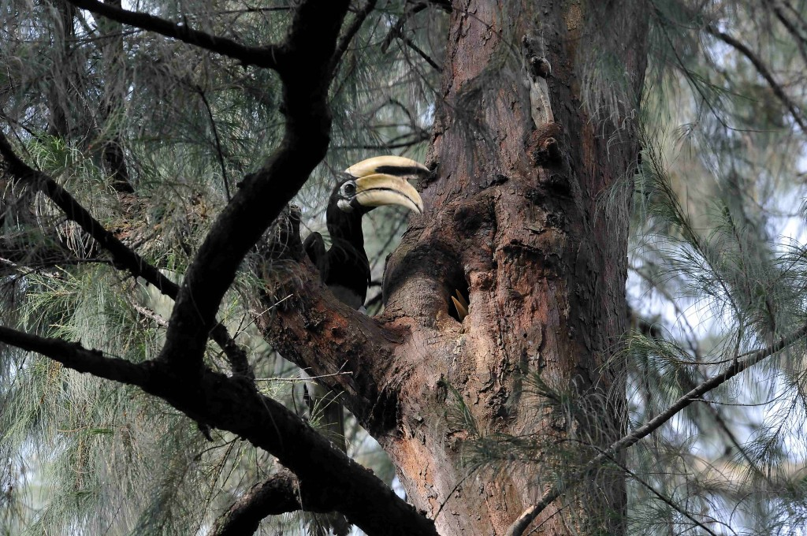

Scroll down to learn more
Hornbills are a family of bird found in tropical and subtropical Africa, Asia and Melanesia. They are characterized by a long, down-curved bill which is frequently brightly colored and sometimes has a casque on the upper mandibll.
 More Information